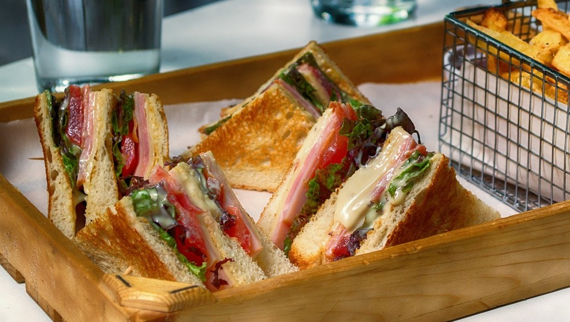
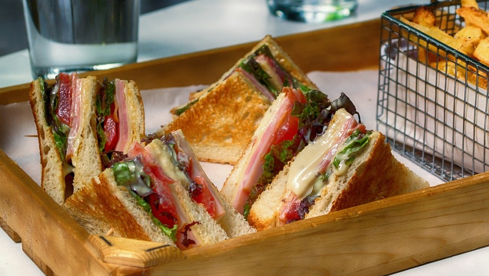

¿Quienes somos?
Bienvenidos a esta gran experiencia
En Café Amanecer, nos enorgullece ser mucho más que una simple cafetería. Somos una familia dedicada a ofrecerte el mejor café fresco y delicioso de la ciudad. Nuestro compromiso va más allá de solo servir bebidas; queremos brindarte una experiencia acogedora y reconfortante cada vez que nos visites. Desde nuestra cuidadosa selección de granos hasta la preparación experta de cada taza, nos esforzamos por garantizar calidad y sabor en cada sorbo. Con un ambiente cálido y acogedor, Café Amanecer es el lugar perfecto para comenzar tu día con una sonrisa. Ya sea que estés buscando un lugar tranquilo para trabajar, una reunión con amigos o simplemente un momento de relajación, nuestro equipo amable y dedicado está aquí para hacerte sentir como en casa desde el momento en que entras por la puerta. Ven a visitarnos y descubre por qué Café Amanecer es el lugar donde los buenos días comienzan.


 
